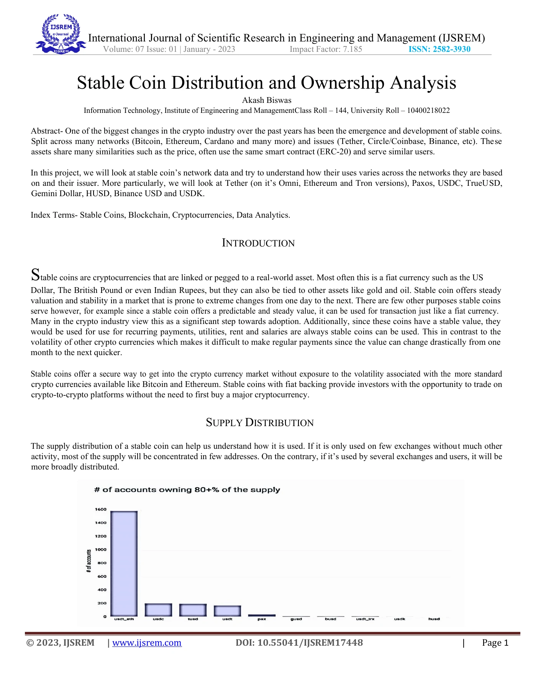

DATA SCIENCE · MACHINE LEARNING · RESEARCH
Finding the
signal in
the complex.
I’m Akash. I turn complex data into clear insights, predictive models, and better business decisions.
⌖ London, Ontario, Canada
FIG. 01 / LATENT SPACE● SIGNAL FOUND
PATTERNS / POSSIBILITIES
FROM OBSERVATION TO UNDERSTANDING↗
Python✳SQL✳Machine Learning✳Data Visualization✳Business Analysis
PEOPLE ANALYTICS01
1,470employeesUnderstanding the patterns
behind employee attrition.
EXPLORE → MODEL → EVALUATE↗
ClassificationPeople analytics
What makes employees stay?
Exploring the factors associated with employee attrition, then comparing logistic regression, random forest, and neural network models.
Python / Pandas / Scikit-learn / Seaborn
Explore employee retention↗
SALES DEPARTMENT02
1M+daily sales records
TIME SERIES / FORECASTING STUDYILLUSTRATIVE PATTERN
Time seriesRetail analytics
Making sense of sales over time.
Combining daily sales with store metadata to explore seasonality, promotions, and trading patterns, with a 60-day Prophet forecast for a selected store.
Python / Pandas / Prophet / Matplotlib
Explore sales forecasting↗
02 / PUBLISHED RESEARCH
IJSREM · JANUARY 2023
Behind the peg.
Inside the network.
Stable Coin Distribution and Ownership Analysis
A closer look at how stablecoins are held and used across networks and issuers. The paper examines supply concentration, on-chain activity, transaction value, and shared ownership.
Supply distributionNetwork activityOwnership patterns
AKASH BISWAS · DOI: 10.55041/IJSREM17448
RESEARCH NOTE / 0016 PAGES

From the published paper ↗
03 / THE PERSON BEHIND THE DATA
Technical depth.
Business perspective.
I’m Akash Biswas, a data science and machine learning practitioner with a foundation in business analysis. My work spans predictive modeling, exploratory analysis, and blockchain research.
I bring research experience from IEM Labs and a data science internship at Inmovidu Tech, alongside postgraduate studies in AI, machine learning, and business analysis at Fanshawe College.
More about me on LinkedIn ↗01Data & modeling
Python, SQL, R, Pandas, Scikit-learn, machine learning and deep learning.
02Analysis & communication
Exploratory analysis, time series forecasting, data visualization, and research synthesis.
03Business understanding
ECBA certified. Business analysis, Agile and Waterfall workflows, stakeholder-focused reporting.